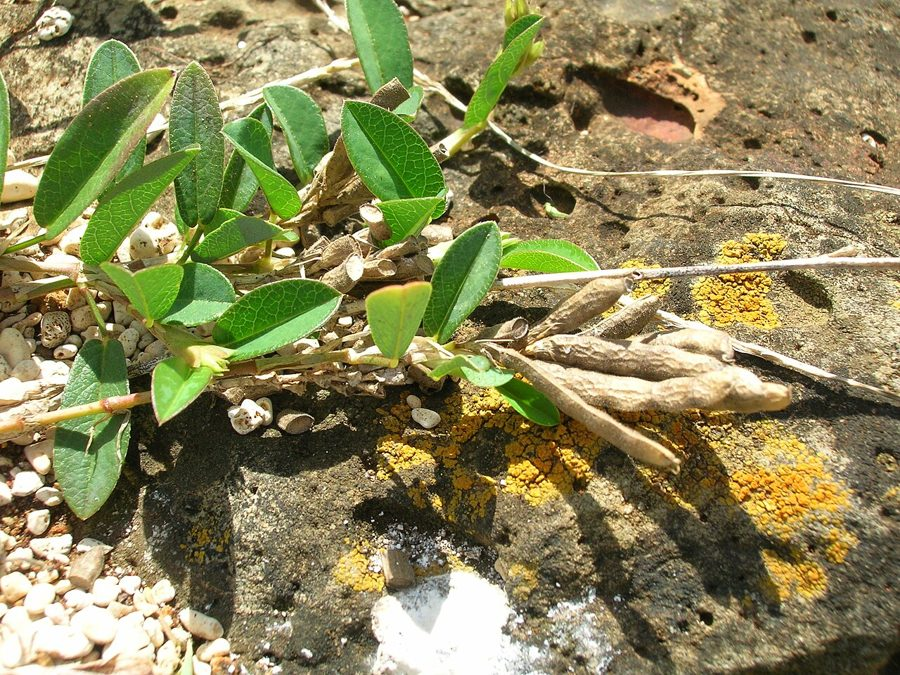

सरिवनAlyce Clover
Alysicarpus vaginalis · Fabaceae · FLR-0238

- Scientific name वैज्ञानिक नाम
- Alysicarpus vaginalis (L.) DC.
- Family कुल
- Fabaceae
- Hindi हिंदी
- सरिवन
- Local names स्थानीय नाम
- sarivan, shalparni, alyce clover, alysicarpus
- Status here यहाँ की स्थिति
- native
- Movement आवागमन
- Resident, here all year
- Known from कहाँ दर्ज
- Others have published records from the wider Awadh–Purvanchal plain, none yet from Basti–Ayodhya अवध–पूर्वांचल से दूसरों के प्रकाशित अभिलेख, बस्ती–अयोध्या से अभी नहीं
- IUCN IUCN
- not evaluated
- Review समीक्षा
- audited and independently read
When to look कब देखें
Expected mainly in June, July, August, September, October, November. मुख्यतः जून, जुलाई, अगस्त, सितंबर, अक्टूबर, नवंबर में अपेक्षित।
Uses and possibilities उपयोग और संभावनाएँ
Drawn from the documented uses in the profile below, where each is labelled traditional, current or a research lead. All uses →
Tell it apart from इनसे अलग पहचानें
सरिवन / Alyce Clover
Alysicarpus vaginalis (L.) DC. — Fabaceae
सरिवन — भारत का एक जंगली लाल-फूल वाली तिपत्ती या मटर जो बरसात के बाद गर्मी और सर्दी की शुरुआत में फूल-फल देती है। पत्तियाँ तीन की एक पत्ती (ternate), लंबोतरी। फूल छोटे, गहरे लाल या गुलाबी, सूक्ष्म। फली बहुत ही अनोखी — न तोड़ी जाने वाली, सीधी कड़ी फली जिसमें 4-5 खंड होते हैं, हर खंड में एक बीज। गाय-भैंस इसकी पत्तियाँ चरते हैं। नाइट्रोजन मिट्टी में बढ़ाता है।
Quick Identification त्वरित पहचान
| Feature | Description |
|---|---|
| Plant form | Erect to spreading annual, 30–90 cm, slightly hairy |
| Leaves | Alternate, ternate (three leaflets per leaf), leaflets 1–3 cm, oblong-linear |
| Flowers | Small, deep red to pink, papilionaceous, 6–8 mm, in dense racemes |
| Fruit | Distinctive indehiscent jointed pod (lomentum), 2–3 cm, with 4–5 segments |
| Stem | Herbaceous, angular, slightly pubescent |
| The test | Three leaflets per leaf; red flowers in racemes; indehiscent jointed pods |
Field tip: Look on field margins and wastelands for a herbaceous plant with three-part leaves and dense spikes of tiny deep red flowers. The most diagnostic feature is the stiff, jointed seed pod that does not open naturally — it breaks into segments for seed dispersal.
हिंदी — कैसे पहचानें: तीन पत्तियों वाला, लाल फूल, बहुत अजीब फली जो खंडों में टूटती है।
Morphology आकारिकी
Biometrics (typical measurements for plants in tropical India):
| Measurement | Range |
|---|---|
| Plant height | 30–90 cm |
| Leaflet length | 1–3 cm |
| Leaflet width | 0.3–0.8 cm |
| Flower length | 6–8 mm |
| Pod length | 2–3 cm |
| Seed diameter | 3–4 mm |
Stem: Herbaceous, angular, slightly pubescent with fine hairs, branching.
Leaves: Alternate, petiolate, ternate (three leaflets). Leaflets are oblong-linear, 1–3 cm long, entire, with pronounced venation. Stipules are small, lanceolate.
Flowers: Small, deep red or pink (occasionally paler), papilionaceous, arranged in dense, terminal or lateral racemes. The flowers are approximately 6–8 mm long and attract small bees. Self-compatible; also visited by insects.
Fruit: A highly distinctive indehiscent lomentum (jointed pod) that does not open naturally. The pod is 2–3 cm long and constricted between segments, dividing into 4–5 single-seeded segments (articles) that separate as units. Each segment contains one smooth, round, dark seed. This structure is unique in the genus and aids in seed dispersal — animals step on or eat individual segments.
Nodulation: Forms root nodules with Rhizobium bacteria for nitrogen fixation.
हिंदी: तीन पत्तियाँ, गहरी लाल फूल। फली खंडों में टूटती है, हर खंड में एक बीज।
Behaviour & Ecology व्यवहार और पारिस्थितिकी
Alysicarpus vaginalis is a monsoon-season legume of Indian origin, found in open grasslands, field margins, and wastelands from June through November. The plant grows rapidly during the post-monsoon period (September–October) when temperatures are moderate and soil moisture is adequate. It does not compete strongly with dense crops but establishes well in fallow fields and is browsed by livestock.
As a nitrogen-fixing legume, the plant enriches soil and is sometimes deliberately retained in fields as a green manure crop (though this practice is declining). The plant is self-compatible and is also pollinated by small insects. Seeds are dispersed by segment separation and by adhering to animal fur.
हिंदी: बरसात के बाद तेजी से बढ़ता है। गाय-भैंस इसे चरते हैं। मिट्टी में नाइट्रोजन बढ़ाता है।
Life Cycle / Phenology जीवन चक्र
| Month / season | Event |
|---|---|
| June–July | Seed germinates with monsoon rains |
| July–September | Vegetative growth; plant establishes rosette and branches |
| September–October | Flowering; dense flowering throughout the plant |
| October–November | Fruiting; seed maturation and dispersal; plant senesces |
Seeds have hard seed coats and may remain dormant for one or two years before germinating. The plant is an obligate monsoon-to-post-monsoon annual in eastern UP.
हिंदी: जुलाई-अगस्त में बढ़ोतरी, सितंबर-अक्टूबर में फूल, नवंबर तक बीज।
Associated Species / Interactions संबंधित प्रजातियाँ
- Field margin companions: Found with other monsoon legumes and grasses in fallow fields and disturbed areas.
- Livestock forage: Often grazed by cattle and goats; sometimes deliberately retained in fields as a pasture plant.
- Green manure: Occasionally ploughed in as a green manure crop to enrich nitrogen in soil (though this practice is declining with chemical fertilizer use).
Pests and Diseases कीट और रोग
- No specific serious pests; leaves are occasionally browsed by leaf-eating insects.
- Generally healthy; fungal diseases are not serious.
Agricultural / Human Relevance कृषि प्रासंगिकता
As a weed:
Alysicarpus vaginalis is a minor weed of monsoon and post-monsoon cultivation in eastern UP. The plant is not strongly competitive and is easily controlled by hand-weeding. In fallow fields it is often tolerated or even encouraged for its value as livestock forage and its nitrogen-fixing capacity.
Livestock forage:
The plant is palatable to cattle, goats, and sheep, and the leaves and stems are browsed readily. It is sometimes deliberately retained in field margins and fallow fields as a source of summer-to-autumn forage.
Green manure and soil improvement:
Historically, Alysicarpus vaginalis was sometimes grown deliberately and ploughed in as a green manure crop to improve nitrogen status of soils. This practice was more common before chemical fertilizer became widespread. The practice continues in some regions and in organic farming systems.
Nitrogen fixation:
As a legume, the plant forms root nodules with Rhizobium bacteria and can fix 20–30 kg of nitrogen per hectare per year (though this varies with management and soil conditions).
Today. The plant is a minor but beneficial weed of fallow fields and field margins in eastern UP, valued more for its forage and soil improvement than seen as a pest.
Research direction (a lead, not a result). The potential for Alysicarpus vaginalis to be managed as a cover crop or rotational green manure crop in sustainable and organic farming systems merits investigation.
हिंदी: पशुओं का पसंदीदा चारा। मिट्टी में नाइट्रोजन बढ़ाता है। गंभीर खरपतवार नहीं।
Expected Locally स्थानीय रूप से अपेक्षित
Not a field record. Written from published accounts for eastern Uttar Pradesh. No confirmed local sighting yet — if you have seen it, that is what the atlas needs.
अभी तक स्थानीय पुष्टि नहीं। यह विवरण प्रकाशित स्रोतों से है, किसी अवलोकन से नहीं।
To be expected in field margins, fallow fields, and wastelands throughout Basti district from July through November. GBIF holds published records from the wider Awadh–Purvanchal plain. A first local photograph would document the jointed pod structure and the red flower.
Distribution वितरण
Global range: Native to tropical India and cultivated in tropical Africa and Asia; widely distributed in tropical and subtropical regions.
In India: Widespread in all states, from the plains to about 1,500 m in the Himalaya.
In Uttar Pradesh: Common in fallow fields and margins of monsoon cultivation.
In Basti district / eastern UP: Expected in monsoon-to-post-monsoon fields and wastelands; GBIF records from the wider region.
Research Questions शोध प्रश्न
Anyone can investigate these | कोई भी इन प्रश्नों की जाँच कर सकता है
- In how many fallow fields in your village does Alyce Clover establish, and do farmers deliberately keep it for livestock forage? — Survey fallow fields in September; ask farmers about intentional retention; record opinions.
- How much nitrogen does Alyce Clover fix in a season, and does the soil retain that nitrogen for the next crop? — Test soil nitrogen levels before and after the plant's growth season in fields that keep the plant versus fields that weed it out.
- Which livestock species (cattle, goats, sheep) prefer to browse Alyce Clover leaves compared to other weeds? — Offer branches to penned animals; record consumption rates.
- Why does the seed pod break into individual segments, and how far can a single seed segment travel when stuck to an animal's fur? — Collect pod segments; attach them to cloth; estimate dispersal distance.
- If you save Alyce Clover seeds for planting the next year, do they all germinate immediately or do some germinate late? / अगर आप सरिवन के बीज अगले साल बोने के लिए रखते हैं तो क्या वे सब एक साथ अंकुरित होते हैं? — Store seeds; test germination in monthly batches over one year.
Similar Species मिलती-जुलती प्रजातियाँ
| Species | How to tell apart | हिंदी |
|---|---|---|
| Sesbania (Sesbania species) | Much taller, up to 1.5 m; longer compound leaves with many leaflets; pink or yellow flowers; different pod | बहुत लंबा, बहुत ज्यादा पत्तियाँ |
| Butterfly Pea (Clitoria ternatea) | Cultivated climber in gardens; blue flowers; more slender plant | बाग़ों में उगाया जाता है, नीले फूल |
| Wild pea (Pisum species) | Larger plant; larger flowers; different pod | बड़ा, बड़े फूल |
Field rule: A herbaceous plant with three-part leaves, deep red small flowers in dense racemes, and a distinctive jointed seed pod that breaks into segments is Alyce Clover.
Taxonomy & Classification वर्गीकरण
Original description. Originally described as Hedysarum vaginale by Linnaeus in 1753, and transferred to Alysicarpus by de Candolle (1825). The epithet vaginalis refers to the pod being sheathed or enclosed.
Subspecies. Monotypic — no subspecies currently recognised.
Family and order placement. Fabaceae, order Fabales. The genus Alysicarpus holds about 12–15 species, mostly of tropical African and Asian origin. It is sometimes considered closely related to Hedysarum.
Phylogenetic notes. Molecular studies place Alysicarpus vaginalis as basal within the genus, possibly representing the ancestral form.
IUCN status rationale. Not evaluated. Widespread and native; not assessed.
Photo Gallery फोटो गैलरी
Photos needed आवश्यक फोटो
- [ ] Whole plant showing branching habit (पूरा पौधा)
- [ ] Close view of three-part leaves (पत्तियाँ)
- [ ] Red flowers in raceme (लाल फूलों के समूह)
- [ ] Jointed pod structure (खंडों में टूटी फली)
No photos yet — add field photos to media/species/alyce_clover/ and run node scripts/sync_photos.js.
References संदर्भ
- Linnaeus, C. (1753). Species Plantarum. Laurentii Salvii, Holmiae, Vol. 2, p. 747. [original description as Hedysarum vaginale]
- de Candolle, A.P. (1825). Prodromus Systematis Naturalis Regni Vegetabilis, Vol. 2. Sumptibus Sociorum Treuttel et Würtz, Paris. [transfer to Alysicarpus]
- Hooker, J.D. (1875). The Flora of British India, Vol. 2. L. Reeve, London.
- Duthie, J.F. (1903). Flora of the Upper Gangetic Plain and of the Adjacent Siwalik and Sub-Himalayan Tracts. Government Printing, Calcutta.
- USDA Agricultural Research Service. Germplasm Resources Information Network (GRIN). [taxonomic and agronomic information]
- GBIF Occurrence Data — Alysicarpus vaginalis, India (2026).
Source file: species/flora/weeds/alyce_clover.md